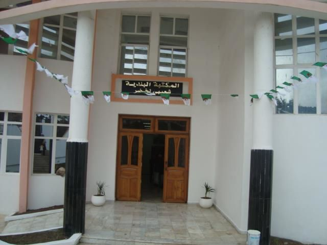
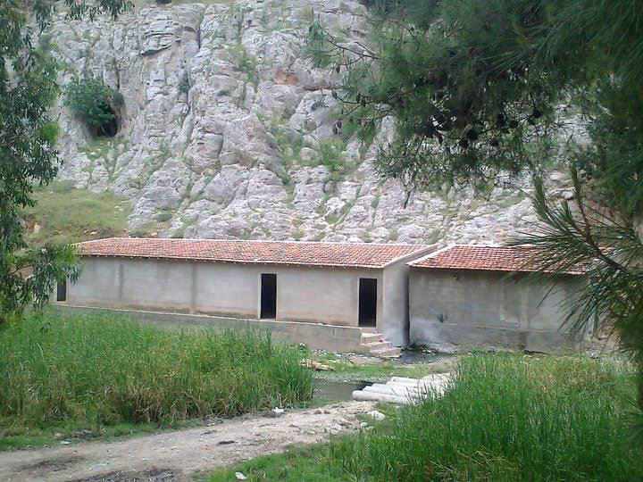
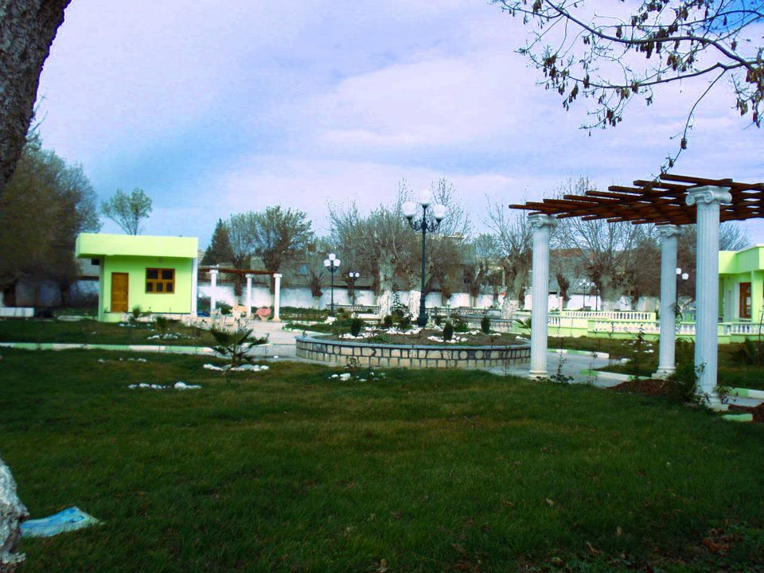
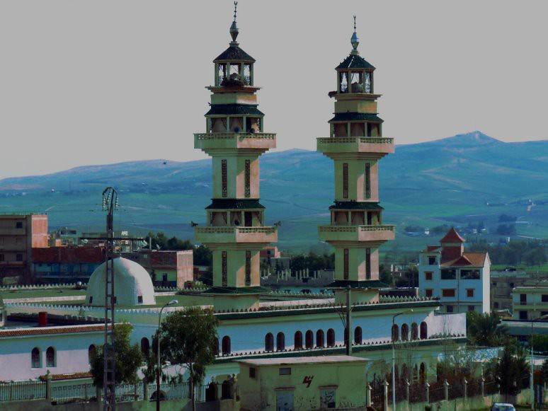
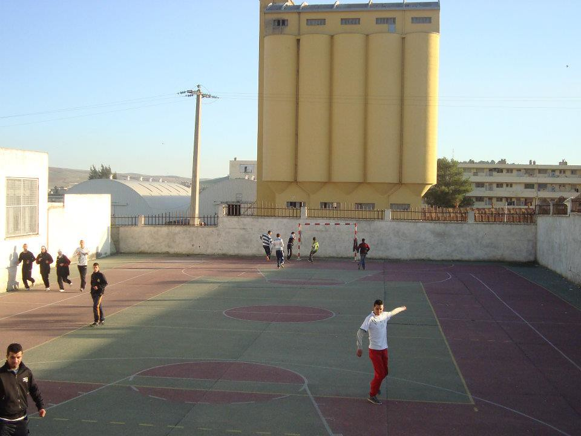

المزيد من الوجهات السياحية
اكتشف المزيد من الأماكن الرائعة في وادي العثمانية

المكتبة البلدية
مكتبة عامة توفر مساحة هادئة للقراءة والدراسة، وتحتوي على مجموعة واسعة من الكتب والمراجع
8:00 - 20:00
وسط المدينة
مكتبة عامة
قاعة قراءة
إنترنت مجاني
أجهزة كمبيوتر

حمام جبل قروز
حمام طبيعي ساخن يقع في جبل قروز، يتميز بمياهه المعدنية العلاجية وموقعه الخلاب
8:00 - 22:00
جبل قروز
حمام طبيعي
مياه معدنية
حمامات سباحة
منطقة استرخاء
.jpg)
مقام الشهيد
نصب تذكاري شامخ يخلد ذكرى شهداء الثورة التحريرية، يتميز بتصميمه المعماري الفريد وموقعه المميز
9:00 - 17:00
وسط المدينة
معلم تاريخي
متحف تاريخي
مواقع تصوير
مكان للزيارة

حديقة قروز بارك
حديقة عامة جميلة تتيح فرصاً للاسترخاء والترفيه، تتميز بمساحاتها الخضراء الواسعة وتصميمها الجذاب
7:00 - 23:00
وسط المدينة
حديقة عامة
مناطق للتنزه
مناطق أطفال
مقاهي

مسجد عمر بن الخطاب
مسجد جامع تاريخي يتميز بتصميمه المعماري الإسلامي الفريد، ويعد من أهم المعالم الدينية في المدينة
مفتوح 24 ساعة
وسط المدينة
مسجد جامع
مكان للعبادة
دروس دينية
معلم سياحي

ملحق رياضي لدار الشباب
مركز رياضي متكامل يقدم مجموعة متنوعة من الأنشطة الرياضية والترفيهية للشباب
8:00 - 22:00
وسط المدينة
مركز رياضي
ملاعب رياضية
أنشطة متنوعة
نوادي شبابية